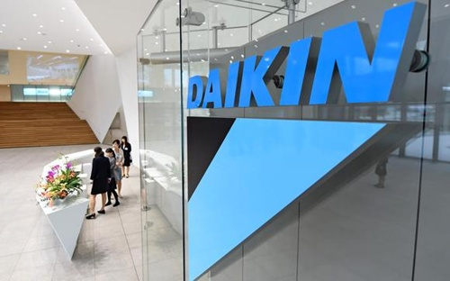

COSY AIRCONDITIONERS
Copyrights © 2017. All Rights Reserved
Daikin Industries, Ltd., has recently decided to invest approximately 10 billion yen in the Thang Long Industrial Park II located in the suburbs of the capital of Hanoi in the Socialist Republic of Viet Nam. The investment will establish Daikin's first production base in Viet Nam. With operations scheduled to start from April 2018, the factory is slated to manufacture residential-use air conditioners and join existing Daikin production bases in Thailand, Malaysia, and India as the newest factory in Asia.
In recent years, active infrastructure investment and the advance of overseas companies have sustained economic growth in Asia. Increases in population and higher income levels have also led to expansion of the air conditioning market. Consequently, Daikin is expanding its sales network and bolstering its after sales service system in Asia, and sales are steadily growing in such countries as Viet Nam, Indonesia, and Thailand.
With production bases established in Thailand, Malaysia, and India, Daikin currently provides products to each country in the Asia region. However, investigation of a new production base to meet greater demand in the future in Asia had become an issue.
Demand for air conditioners in Viet Nam has experienced rapid growth centering particularly on residential-use air conditioners due to the country's remarkable economic development and expanding middle class. Demand continues to grow and has become the largest market in Asia for air conditioners. Plus, with electric bills comparably high relative to income, energy-saving products such as inverter-type air conditioners continue to gain popularity. Because demand is expected to continue growing in Viet Nam, Daikin is increasing its capacity to supply products with the establishment of a new factory and local production to further accelerate business expansion.
Daikin has made strengthening the air conditioning business in the rapidly growing market of Asia an important measure in its strategic management plan Fusion 20 and will aim for 380 billion yen in sales for Asia in 2018 as it works to further expand business in every country beginning with Viet Nam.